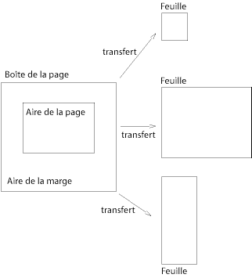

Contenu
Les médias paginés (ex. les feuilles de papier, les transparents, les pages qui ne s'affichent pas sur un moniteur, etc.) diffèrent des médias continus en ceci que le contenu du document est découpé à discrétion en une ou plusieurs pages. Pour la gestion de ce découpage de la page, CSS2 étend le modèle de mise en forme visuel des manières suivantes :
Le modèle de la page de CSS2 définit la mise en forme d'un document dans une aire rectangulaire, la boîte de page, celle-ci ayant une largeur et une hauteur limitées. La boîte de page ne correspond pas forcément à la feuille définitive sur laquelle le document sera rendu (une feuille de papier, un transparent, un écran, etc.). Le modèle de la page spécifiant la mise en forme dans la boîte de page, le transfert de cette dernière vers la feuille est du ressort de l'agent utilisateur. Quelques modalités de transfert :
Bien que CSS2 ne définisse pas la manière dont les agents utilisateurs doivent transférer les boîtes de page vers leurs feuilles cibles, le langage inclut des mécanismes pour leur indiquer la dimension et l'orientation de celles-ci.
La boîte de page est une aire rectangulaire comportant deux parties :
Remarque : En CSS2, les propriétés de bordure et d'espacement ne s'appliquent pas aux pages, ceci pourrait être le cas ultérieurement.
Les auteurs spécifient les dimensions, l'orientation, les marges, etc. d'une boîte de page au travers d'une règle @page. Une telle règle consiste en le mot-clé "@page", qui est un sélecteur de page (suivi, en option, par une pseudo-classe de page, sans caractère blanc intermédiaire), et d'un bloc de déclaration (qu'on dit être dans le contexte de la page).
Le sélecteur de page précise lesquelles des pages sont concernées par les déclarations. En CSS2, les sélecteurs de page peuvent désigner chacune des pages de gauche, chacune des pages de droite ou une page avec un nom donné.
La propriété 'size' donne les dimensions de la boîte de page, l'aire de marge étant déduite.
Par exemple, cette règle @page produit une taille de boîte de page de 8.5 x 11 pouces et une marge de '2cm' sur chacun des côtés entre le bord de la boîte de page et l'aire de la page :
@page { size: 8.5in 11in; margin: 2cm }
Les propriétés de marge ('margin-top', 'margin-right', 'margin-bottom', 'margin-left' et 'margin') s'appliquent dans le contexte de la page. L'illustration suivante montre les relations entre la feuille, la boîte de page et les marges de la page :
 [D]
Les valeurs calculées des marges de la boîte, en haut ou en bas de la page, sont égales à '0'.
La notion de police étant étrangère au contexte de la page, ainsi les unités 'em' et 'ex' ne sont pas admises. Les valeurs en pourcentage des propriétés de marge se rapportent aux dimensions de la boîte de la page, à la largeur de celle-ci pour les marges gauche et droite, à la hauteur, pour les marges du haut et du bas. Les autres unités définies respectivement à leurs propriétés sont admises.
Des valeurs de marge négatives (pour la boîte de la page, ou pour certains éléments) ou un positionnement absolu peuvent placer un contenu en dehors de la boîte de la page, aussi celui-ci peut être "coupé" (par l'agent utilisateur, par l'imprimante ou, finalement, par le massicot).
| Valeur : | <longueur>{1,2} | auto | portrait | landscape | inherit |
| Initiale : | auto |
| S'applique à : | un contexte de page |
| Héritée : | sans objet |
| Pourcentage : | sans objet |
| Médias : | visuel, paginé |
Cette propriété spécifie la taille et l'orientation d'une boîte de page.
La taille d'une boîte de page peut être soit "absolue" (de taille fixe), soit "relative" (de taille variable, celle-ci s'adaptant aux tailles des feuilles disponibles). Les boîtes de page relatives permettent aux agents utilisateurs une mise à l'échelle du document pour une utilisation optimale de la taille de la cible.
La propriété 'size' admet trois valeurs capables de créer une boîte de page relative :
Dans cet exemple, les bords externes de la boîte de la page s'aligneront sur ceux de la cible. La valeur en pourcentage de la propriété 'margin' se rapporte à la taille de la cible, ainsi, quand la feuille cible a pour dimensions 21.0 cm x 29.7 cm (format A4), les marges seront 2.1 0cm (horizontalement) et 2.97 cm (verticalement) :
@page {
size: auto; /* auto est la valeur initiale */
margin: 10%;
}
Les valeurs de longueur de la propriété 'size' créent une boîte de page de taille absolue. Quand on ne spécifie qu'une seule valeur, la largeur et la hauteur de la boîte de la page sont les mêmes (c.à.d. une boîte carrée). La boîte de la page étant le bloc conteneur initial, la propriété 'size' n'admet pas de valeurs en pourcentage.
Par exemple :
@page {
size: 8.5in 11in; /* width height */
}
Ici, la boîte de la page a une largeur de 8.5in et une hauteur de 11in. Les dimensions requises pour la feuille cible sont 8.5 x 11 pouces, au moins.
Les agents utilisateurs peuvent autoriser un certain contrôle du transfert de la page vers la feuille (c.à.d. la rotation d'une boîte de page absolue en vue de son impression).
Quand la boîte de la page ne tient pas dans la feuille cible, l'agent utilisateur peut exercer :
L'agent utilisateur devrait prévenir l'utilisateur avant d'effectuer ces opérations.
Quand la boîte de la page est plus petite que la feuille cible, l'agent utilisateur est libre de la placer n'importe où dans la feuille. Cependant, on recommande que celle-ci soit centrée dans la feuille, ce qui permet un certain alignement sur une feuille au recto et au verso, et aussi d'éviter d'éventuelles pertes d'information quand l'impression a lieu trop près du bord de la feuille.
Pour les impressions de qualité, on ajoute souvent des repères en dehors de la boîte de la page. Cette propriété indique si des repères de coupe, ou d'alignement, ou les deux en même temps, doivent apparaître, ou non, en dehors des limites de la boîte de la page.
Les repères de coupe indiquent l'endroit où la page doit être coupée. Les repères d'alignement (ou aussi, de cadrage ou d'intersection) sont employés pour aligner les feuilles.
Ces repères ne sont visibles que pour des boîtes de page absolues (voir la propriété 'size'). Dans le cas des boîtes relatives, la boîte de page s'aligne sur cible, les repères se trouvant hors de la zone d'impression.
La taille, le style et la position des repères dépendent de l'agent utilisateur.
Pour une impression en recto verso, les boîtes de page de gauche et de droite devraient apparaître différemment. Ceci peut être réalisé à l'aide de deux pseudo-classes CSS, pouvant être définies dans le contexte de la page.
Les agents utilisateurs rangent automatiquement chacune des pages selon les pseudo-classes :left ou :right.
@page :left {
margin-left: 4cm;
margin-right: 3cm;
}
@page :right {
margin-left: 3cm;
margin-right: 4cm;
}
Quand on donne des déclarations distinctes aux pages de gauche et de droite, l'agent utilisateur doit respecter celles-ci, même si celui-ci n'effectue pas le transfert des boîtes de page selon les feuilles de gauche et celles de droite (ex. l'imprimante n'imprime qu'en recto).
Les auteurs peuvent également spécifier un style particulier à la première page d'un document avec la pseudo-classe :first :
@page { margin: 2cm } /* Toutes les marges font 2cm */
@page :first {
margin-top: 10cm /* La marge du haut de la première page fait 10cm */
}
La détermination du côté de la première page d'un document, page de gauche ou de droite, dépend du sens d'écriture principal du document, ceci n'est pas traité dans la présente spécification. Cependant, pour forcer la première page à gauche, ou à droite, les auteurs peuvent insérer un saut de page avant la première boîte générée (ex. en HTML, le faire pour élément BODY).
Les propriétés spécifiées dans une règle @page, avec une pseudo-classe :left ou :right, surclassent celles dans une règle @page qui en est dépourvue. Et celles dans une règle @page, avec une pseudo-classe :first, surclassent à leur tour celles avec une pseudo-classe :left ou :right.
Remarque : Le fait d'ajouter des déclarations aux pseudo-classes :left ou :right ne présage en rien d'une sortie d'impression du document en recto ou en recto verso (ceci étant en dehors de l'objet de cette spécification).
Remarque : Des versions ultérieures de CSS pourraient introduire d'autres pseudo-classes de page.
Lors de la mise en forme d'un contenu dans le modèle de la page, une partie de celui-ci peut se trouver en dehors de la boîte de la page. Par exemple, un élément dont la propriété 'white-space' a la valeur 'pre' peut générer une boîte plus grande que celle de la page. De même, les boîtes en position absolue peuvent finir à des emplacements "inattendus". Par exemple, des images peuvent être placées au bord de la boîte de la page, ou encore 100 000 pouces en dessous de celle-ci.
La définition de la mise en forme pour de tels éléments n'est pas abordée dans cette spécification. Cependant, dans ces cas, on recommande, de la part des auteurs et des agents utilisateurs, de suivre les principes généraux suivants :
Cette partie traite de la mise en forme des pages en CSS2. Cinq propriétés précisent aux agents utilisateurs les endroits où les sauts de page devraient intervenir et les pages, de gauche ou de droite, les contenus restants doivent finir. Chaque saut de page arrête la mise en forme dans une boîte de page donnée, et entraîne la mise en forme du reste de l'arbre du document dans une nouvelle boîte de page.
| Valeur : | auto | always | avoid | left | right | inherit |
| Initiale : | auto |
| S'applique à : | ceux des éléments de type bloc |
| Héritée : | non |
| Pourcentage : | sans objet |
| Médias : | visuel, paginé |
| Valeur : | auto | always | avoid | left | right | inherit |
| Initiale : | auto |
| S'applique à : | ceux des éléments de type bloc |
| Héritée : | non |
| Pourcentage : | sans objet |
| Médias : | visuel, paginé |
| Valeur : | avoid | auto | inherit |
| Initiale : | auto |
| S'applique à : | ceux des éléments de type bloc |
| Héritée : | oui |
| Pourcentage : | sans objet |
| Pourcentage : | visuel, paginé |
Les significations des valeurs sont :
L'endroit potentiel d'un saut de page est typiquement influencé par la propriété 'page-break-inside' de l'élément parent, par la propriété 'page-break-after' de l'élément précédent et la propriété 'page-break-before' de l'élément suivant. Quand celles-ci ont une valeur autre que 'auto', les valeurs 'always', 'left' et 'right' ont préséance sur 'avoid'. Voir la partie traitant des sauts de page permis pour les règles précises régissant le forçage et la suppression des sauts de page.
| Valeur : | <identificateur> | auto |
| Initiale : | auto |
| S'applique à : | ceux des éléments de type bloc |
| Héritée : | oui |
| Pourcentage : | sans objet |
| Médias : | visuel, paginés |
La propriété 'page' peut être employée pour désigner un type particulier de page où devrait s'afficher un élément donné.
Dans cet exemple, toutes les tables seront placées, avec une orientation paysage (N.D.T. landscape), dans une page de droite (celle-ci est nommée "retournee") :
@page retournee {size: landscape}
TABLE {page: retournee; page-break-before: right}
La propriété 'page' a le fonctionnement suivant : quand une boîte de bloc, avec un contenu en-ligne, a une propriété 'page' dont la valeur est différente de celle de la boîte précédente, également de type bloc avec un contenu en-ligne, alors un ou deux sauts de page sont insérés entre ces deux boîtes, et les boîtes survenant après le saut sont rendues dans une boîte de page avec ce nom. Voir "Les sauts de page forcés" plus loin.
Dans cet exemple, les deux tables sont affichées avec une orientation paysage (sur la même page en effet, si celle-ci peut les contenir), la page nommée "etroite" n'étant pas du tout employée, bien que celle-ci ait été appliquée à l'élément DIV :
@page etroite {size: 9cm 18cm}
@page retournee {size: landscape}
DIV {page: etroite}
TABLE {page: retournee}
le document sur lequel agit la feuille de style :
<DIV> <TABLE>...</TABLE> <TABLE>...</TABLE> </DIV>
La propriété 'orphans' spécifie le nombre minimum de lignes d'un paragraphe devant rester en bas d'une page et la propriété 'widows' le nombre minimum de lignes d'un paragraphe devant rester en haut d'une page. Voir des exemples plus loin sur la manière de les employer pour le contrôle des sauts de page.
Pour des informations au sujet de la mise en forme des paragraphes, consulter la partie traitant des boîtes de ligne.
Dans un flux normal, les sauts de page peuvent survenir aux endroits suivants :
Les règles suivantes régissent ces sauts :
Si ceci n'apportait pas assez de points de sauts pour empêcher le contenu de déborder des boîtes de page, alors on abandonne les règles B et D pour en obtenir plus.
Et si cela ne suffisait toujours pas, alors on abandonne aussi les règles A et C, pour trouver encore d'autres points de sauts.
Les sauts de page ne peuvent survenir dans des boîtes en position absolue.
Un saut de page doit intervenir en (1) si, parmi les propriétés 'page-break-after' et 'page-break-before' de tous les éléments, qui génèrent une boîte se rencontrant à cette marge, il y en a au moins une qui a la valeur 'always', 'left' ou 'right'.
Un saut de page doit aussi intervenir en (1) si les valeurs des propriétés 'page' de la dernière boîte de ligne, avant cette marge, et la première, après celle-ci, sont différentes.
CSS2 ne définit pas lequel parmi les sauts de page permis doit être employé, n'interdit pas, à un agent utilisateur, d'effectuer un saut à l'un ou l'autre des endroits possibles, ne l'oblige pas non plus à effectuer des sauts. Mais CSS2 recommande que les agents utilisateurs observent les comportements suivants (tout en reconnaissant que ceux-ci soient parfois contradictoires) :
Supposons, par exemple, que la feuille de style contienne les déclarations 'orphans: 4' et 'widows: 2', et qu'il y ait 20 lignes (boîtes de ligne) disponibles à la fin d'une page donnée :
Maintenant, supposons que la valeur spécifiée pour 'orphans' soit '10', celle pour 'widows' soit '20' et que 8 lignes soient disponibles à la fin de la page :
Les déclarations dans le contexte de la page obéissent aux règles de la cascade, tout comme les déclarations normales de CSS2.
Soit l'exemple suivant :
@page {
margin-left: 3cm;
}
@page :left {
margin-left: 4cm;
}
En conséquence de la plus grande spécificité du sélecteur avec une pseudo-classe, les pages de gauche auront une marge gauche de '4cm', les autres pages (c.à.d. les pages de droite) auront une marge gauche de '3cm'.